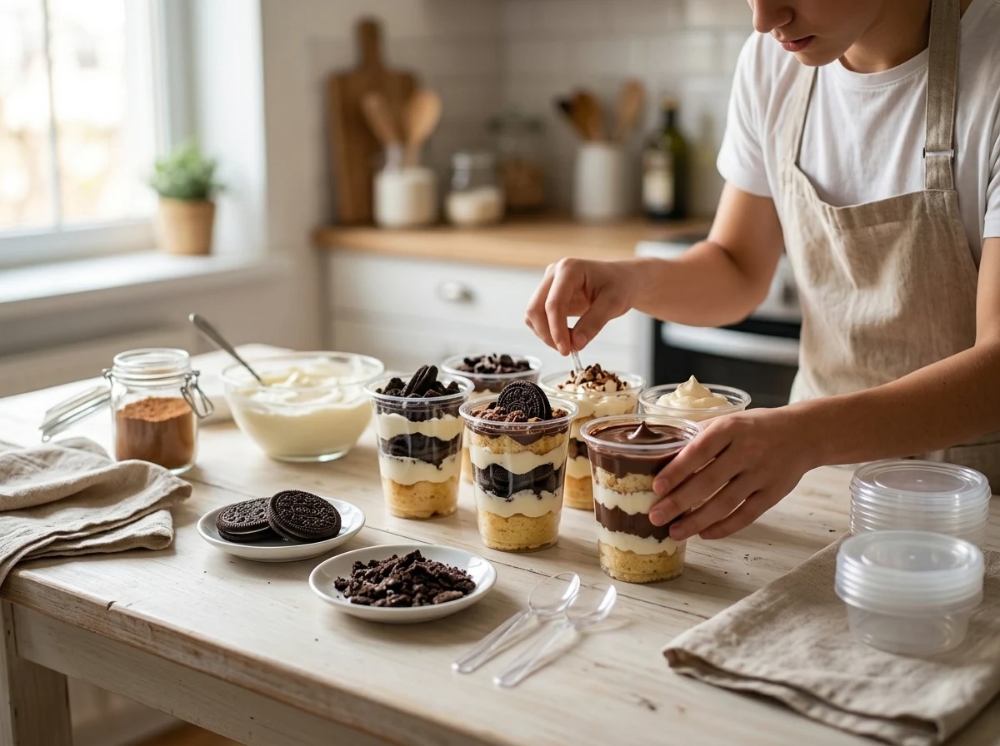

Nuestra Misión
Preparar y ofrecer vasos de postres individuales frescos, ricos y bien presentados a un precio accesible, dirigidos a estudiantes, compañeros de trabajo, vecinos y familiares, cumpliendo siempre con los tiempos de entrega acordados.
Somos un emprendimiento nacido para ofrecer postres individuales deliciosos y económicos ($6.000 COP), pensados para estudiantes, compañeros de trabajo, vecinos y familiares que buscan un gusto dulce sin pagar de más.

Vasos de Postres surgió al identificar una necesidad cotidiana: disfrutar de un postre fresco, con buena presentación y precio justo, evitando los retrasos en las entregas. Combinamos recetas clásicas (Tres Leches, Oreo y Chocolate) con una planificación semanal organizada para preparar y entregar cada pedido con puntualidad.
Preparar y ofrecer vasos de postres individuales frescos, ricos y bien presentados a un precio accesible, dirigidos a estudiantes, compañeros de trabajo, vecinos y familiares, cumpliendo siempre con los tiempos de entrega acordados.
Para el año 2031, consolidarnos como un emprendimiento de repostería reconocido a nivel local por nuestra calidad y puntualidad, logrando abrir un punto de venta propio, ampliar nuestra línea de sabores y gestionar los pedidos de forma digital.